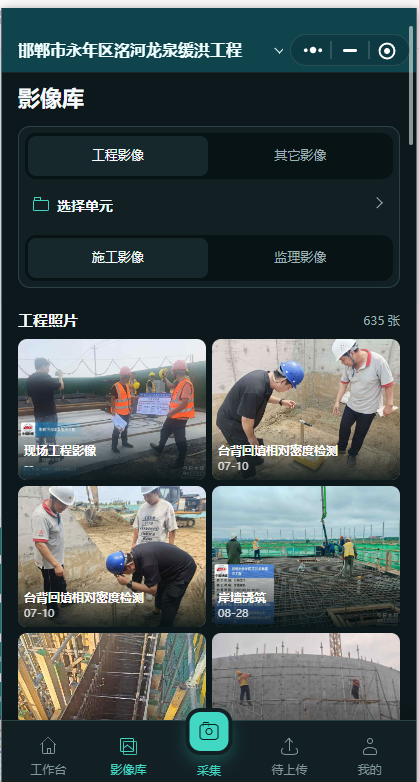

水WATER
水利工程
围绕单位、分部、单元三级项目划分，兼顾施工与监理影像。
- 项目划分导入与单元归档
- 施工 / 监理分类管理
- 工序照片与自动编号
水利、房建、市政、电力都能用。现场微信拍，电脑自动归，按工程和工序快速查，需要时直接打印成册或打包交付。
保留原图 · 本机归档 · 手机电脑同步 · 不改变现有工程资料


从项目类型到必拍清单，再到现场归档层级，按真实业务组织影像。
围绕单位、分部、单元三级项目划分，兼顾施工与监理影像。
覆盖住宅和公共建筑，从基础、主体到装饰安装全过程留痕。
面向线性和节点工程，方便按道路、区段、构筑物连续归档。
适配站、线、缆和新能源场景，关键设备与施工节点不漏拍。
全局上传和单元上传使用同一面板，照片不会因为入口不同而传错位置。
当前单元自动预填，也可以搜索名称、编号或缩略词重新选择。
施工、监理、单元照片和具体工序一眼确认。
选择、拖放或粘贴都只进入队列，不会偷偷提交。
成功、失败、进度和重试逐张可见，归档更放心。
新增、删除、调整顺序后按规则更新，同时保留照片 UUID 和账号归属边界。
按工程专业和类型提示必拍、条件必拍和推荐影像，避免回头补拍。
小程序上传原图，电脑自动同步并在本机资料目录长期归档。
打印当前图库或明确选中的照片，也可导出 XLSX 统计和 ZIP 资料包。
现场人员不用搬文件，办公室也不用等 U 盘。每张照片都能回到正确工程、单元和类别。


先下载体验，现有工程和照片无需迁移。